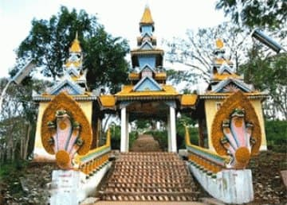

- Siem Reap
- Pailin
- Battambang
- Pursat
- Banteay Meanchey
- Oddar Meanchey
- Preah Vihear
- Kampong Thom
- Kampong Chhnang
- Kampongcham
- Stung Treng
- Ratanakiri
- Mondulkiri
- Kratie
- Tbongkhmum
- Preyveng
- Svay Rieng
- Kandal
- Phnom Penh
- Takeo
- Kampong Speu
- Kampot
- Kep
- Preah Sihanouk
- koh kong

Pailin Travel Guides
General Information
Pailin is a small municipality in the West of Cambodia very closed to the border of Thailand. The provincial capital is called Pailin City and is known to much of the world as being the area where many of the Khmer Rouge leaders came from and retreated after their fall. Until the year of 2001 Pailin was part of the Battambang Province, but was then elevated to city status and thus became a province and autonomous zone of its own.
The city was during the 1980s and 1990s a major Khmer Rouge strongpoint and resource centre. Even after the death of their brutal leader Pol Pot in 1998, many Khmer Rouge leaders still remained there. Some of the leaders went into hiding in fear of punishment for their crimes, although other leaders or henchmen lived openly in the province. It is said that almost 70 percent of the area's older men were fighters for the Khmer Rouge, but unfortunately none of the regular fighters have yet been brought to justice.
As of September 2007, Pailin's remaining Khmer Rouge leaders were being rounded up to face justice by an international tribunal, including Khieu Samphan and Nuon Chea. So after years of the governmental dump contemplation regarding the crime of the Khmer Rouge, its time for lasting enlightenment of what has happen.
Poipet is now more and more becoming a boomtown attracting Cambodians from around the country seeking to make their fortune, or at least a better salary than back home. Pailin was the major revenue producer for the Khmer Rouge guerrillas, being a major gem producing area as well as a prime logging area.
While gem production seems to have tapered off a bit, other business opportunities and the lifestyle have attracted prospectors to the town. Up until the surrender deal of Khmer Rouge's number three men, Ieng Sary, in 1996, the townsfolk lived under the strict rules of the KR hierarchy, with little freedom of expression and most aspects of life being completely controlled by the paranoid regime.
Pailin is just another Wild West town of Cambodia and like the gold-rush days of California, people seem to be everywhere in the hills sifting through mud puddles and scratching at the dirt, looking to strike it rich with the find of a nice gem. Still, there is more control of some aspects of life than in other areas of Cambodia.
But this seems to have attracted people rather than kept them away. Several people, who had moved to Pailin from Phnom Penh, gave this as the main reason they made the move. They liked the idea that criminals did not enjoy the same impunity that they seem to enjoy in Phnom Penh. The influx of residents from other parts of the country has produced a friendlier Pailin. Nowadays the mixed lot of Pailin residents seem happy to see foreigners coming in for holidays and check the place out, realizing that their presence means that normalcy and revenue are arriving in Pailin.
Even the Vietnamese residents seem to have been accepted, which is truly amazing given the hatred the Khmer Rouge have generally shown them. Pailin is worth checking out. The town is nestled in a beautiful valley with picturesque sunsets over the mountains that separate Cambodia and Thailand close by.
Wat Gohng-Kahng is very famous and features the much-photographed landmark gate of Pailin town that you face as you arrive on the highway from Battambang. This wat is the centre of holiday festivities these days in Pailin and was the scene of the official Pailin reintegration ceremony in 1996, after the Ieng Sary faction of the Khmer Rouge worked out surrender and semi-autonomy deals with the Cambodian government.
Geography
Pailin City municipality is the second smallest so-called province in Cambodia with 803 square kilometres. It's located in the West of the country surrounded by Battambang province and bordering Thailand to the West. In the North, the small municipality consists of the typical plain wet area for Cambodia, covering rice fields and other agricultural plantations.
Pailin City itself is located on the foothills of Chuor Phnom Kravanh, an extension of the Kardamom Mountains, which range until here. The South of the municipality is quite hilly and tops with the highest altitude of 1164m. The province also features some smaller rivers coming from the mountain range.
Population
The current population in this municipality is about 35,234 people or 0.25% of the country's total population (14,363,519 person in Cambodia, 2007, provincial government data), with 19,059 male and 16,175 female. The population density is therefore 44 people per square kilometre.
Climate

The country has a tropical climate - warm and humid. In the monsoon season, abundant rain allows for the cultivation of a wide variety of crops. This year-round tropical climate makes Cambodia ideal for developing tourism. Travellers need not to fear natural disasters such as erupting volcanoes or earthquakes, and the country is not directly affected by tropical storms.
Climate: Cambodia can be visited throughout the year. However, those plans to travel extensively by road should be avoided the last two months of the rainy season when some countryside roads may be impassable. The average temperature is about 27 degrees Celsius; the minimum temperature is about 16 degrees. December and January are the coolest months, whereas the hottest is April.
General information about the provincial climate:
- Cool season: November- March (22-28c)
- Hot season: March- May (27c -34c)
- Rainy season: May - October (24-32c, with humidity up to 90%.)
Economy
The surrounding area of Pailin City was rich in a variety of gemstones which were mined almost clean to support the Khmer Rouge. They also logged the area to create personal wealth with no regard for the effect on the environment. Nowadays all you can find is low-quality, cheap, hand-faceted gemstones at the market in Pailin downtown.
After the exploitation of the natural resources available, the Khmer Rouge invested their money in the Casinos around Pailin. Pailin is located in the most heavily mined area in the world, so especially unaware travellers are cautioned to stay only on marked roads.
Citizens of Pailin will accept Baht, Riels and US dollars, though US dollars are preferred.